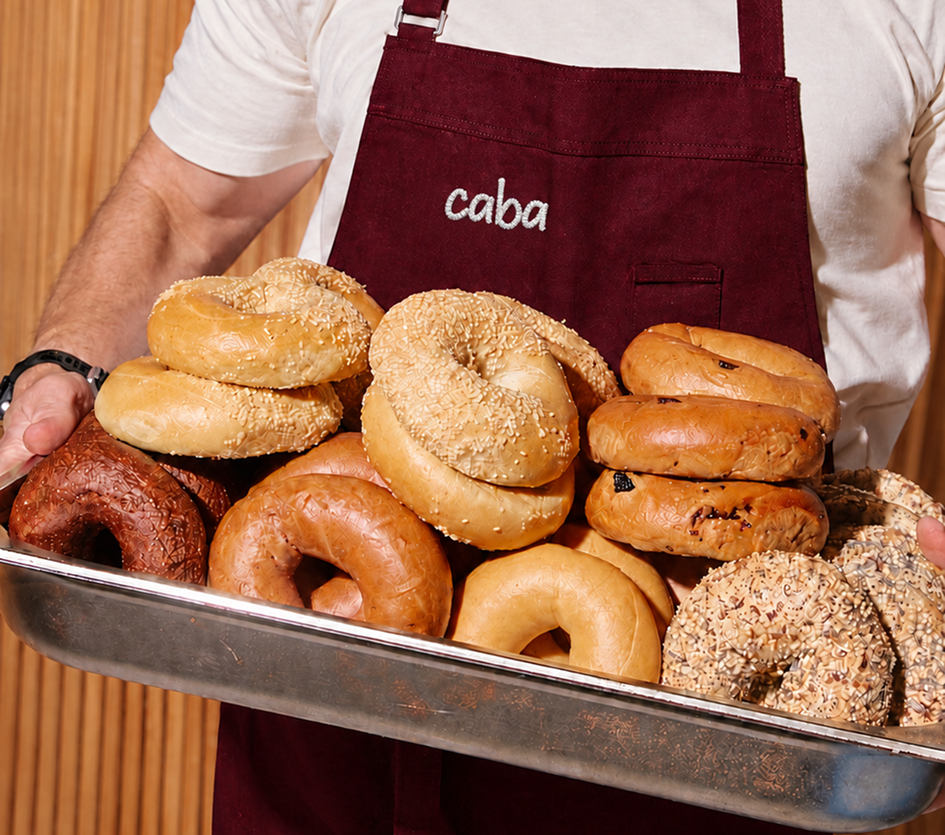

TIPOS DE BAGELS
Preguntas frecuentes
Sí, y también tuercas, arandelas y tacos. Nos traes el que se te ha perdido y te buscamos su pareja.
No cosemos, pero te vendemos todo lo necesario y te explicamos cómo hacerlo. Bajos, botones y cremalleras, sin miedo.
Sí, en el momento. Las de seguridad tardan un par de días porque las pedimos al fabricante.
Visítanos
Calle del Carmen, 12 · 28012 Madrid
Metro Lavapiés (línea 3)
Horario
Horario por decidir